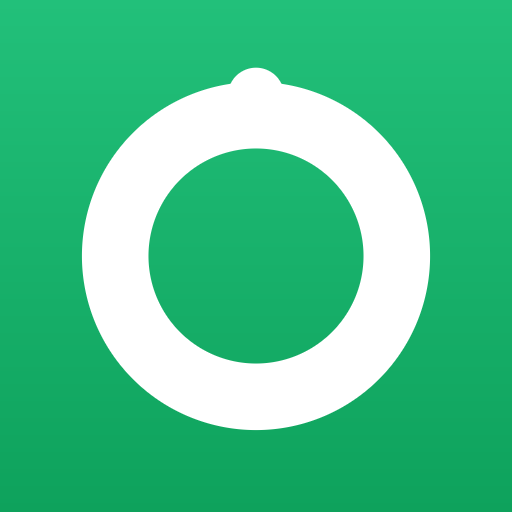

Calorie Tracker
Track your daily calories and macros — right from your home screen. Следи калориите и макросите си — директно от началния екран.
Chrome or Edge. Tap to install — no app store needed. Chrome или Edge. Натисни за инсталиране — без магазин за приложения.
If nothing pops up, add it manually: Ако не се появи прозорец, добави ръчно:
- Open the browser menu ( ⋮ , top-right). Отвори менюто на браузъра ( ⋮ , горе вдясно).
- Tap Install app (or Add to Home screen). Натисни Инсталирай приложението (или Добави към началния екран).
- Confirm with Install. Потвърди с Инсталирай.
Apple has no one-tap install — tap for the 3 quick steps. Apple няма инсталиране с едно натискане — виж 3-те лесни стъпки.
Add to Home Screen (in Safari): Добави към началния екран (в Safari):
- Tap the Share button in Safari's toolbar. Натисни бутона Споделяне в лентата на Safari.
- Scroll down and tap Add to Home Screen. Превърти надолу и натисни Към началния екран.
- Tap Add — the icon appears on your home screen. Натисни Добави — иконата се появява на началния екран.
⚠️ Must be opened in Safari. Chrome/Firefox on iPhone can't add to the home screen. ⚠️ Трябва да е отворено в Safari. Chrome/Firefox на iPhone не могат да добавят към началния екран.